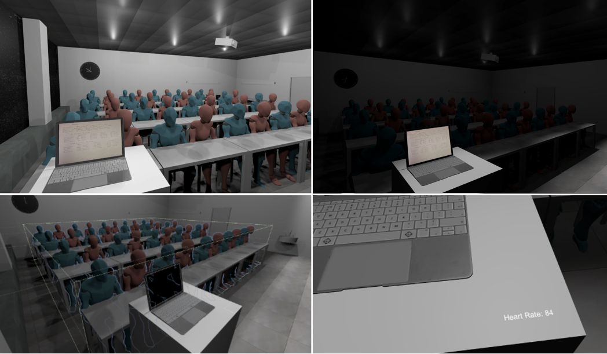

Combating Stage Fright in VR using Gradual Lighting

Venue. ISMAR-Adjunct (2024)
Abstract. The principle of exposure therapy is to gradually increase the exposure of an individual to the feared stimulus. In our study, we explore this approach to help people with stage fright to gradually notice the presence of a virtual audience in a classroom. We propose a Virtual Reality (VR) application where the users can rehearse their presentations in front of a virtual audience. Then, we test the influence of two different light conditions: 1) constant and 2) gradually increasing light, on reducing presenters’ stress levels. Finally, we report results on our participants’ preferences with the two conditions.
Link to this page: